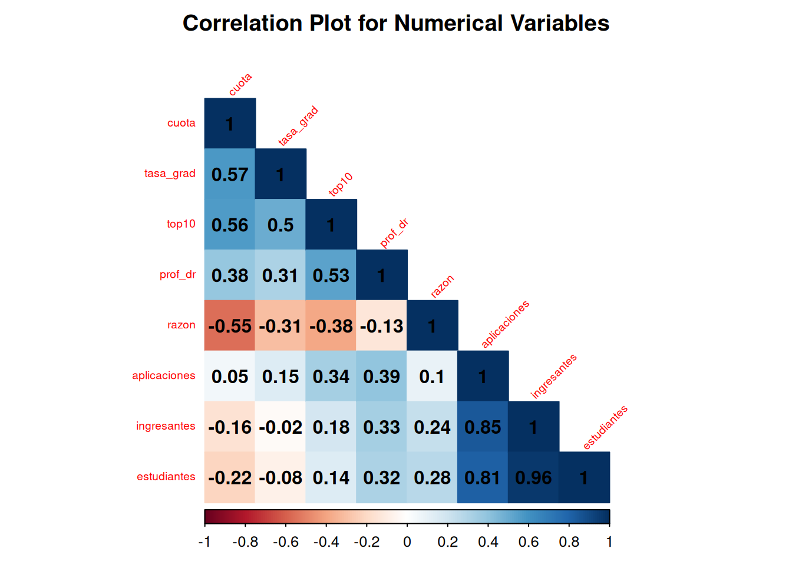

Code
library(tidyverse)
library(ggplot2)
library(GGally)
library(caret)
library(corrplot)
library(janitor)
library(knitr)TP Final - Regresion avanzada
Se nos presenta una base de datos sobre universidades publicas y privadas con las siguientes variables
| Variable | Descripción |
|---|---|
privada |
indica si la universidad es privada o no. |
aplicaciones |
cantidad de aplicaciones recibidas por la universidad durante el último año (cada estudiante que aspira a ingresar debe presentar una aplicación formal, a partir de la cual es admitido/a o rechazado/a), medida en miles de personas. |
ingresantes |
cantidad de aplicaciones aceptadas, medida en miles de personas. |
estudiantes |
cantidad total de estudiantes en carreras de grado, medida en miles de personas. |
top10 |
porcentaje de ingresantes que fueron parte del 10% de estudiantes con mejores calificaciones en sus respectivas escuelas secundarias. |
cuota |
costo de la cuota de la universidad, medida en miles de dólares. |
prof_dr |
porcentaje de profesores de la universidad que poseen título de doctorado. |
razon |
tasa de estudiantes por profesor. |
tasa_grad |
porcentaje de estudiantes que se gradúan. |
La variable de interés es tasa_grad que indica el porcentaje de estudiantes que se gradúan
A continuacion se importan las librerias que utilizaremos y se lee la funte de la base de datos
library(tidyverse)
library(ggplot2)
library(GGally)
library(caret)
library(corrplot)
library(janitor)
library(knitr)df = read.delim('1-data/universidades.txt')
df = df %>%
mutate(privada = factor(privada))
categoricals_vars <- df %>%
select(where(is.factor)) %>%
names()
continuous_vars <- df %>%
select(where(is.numeric)) %>%
names()
head(df)skimr::skim(df)| Name | df |
| Number of rows | 777 |
| Number of columns | 9 |
| _______________________ | |
| Column type frequency: | |
| factor | 1 |
| numeric | 8 |
| ________________________ | |
| Group variables | None |
Variable type: factor
| skim_variable | n_missing | complete_rate | ordered | n_unique | top_counts |
|---|---|---|---|---|---|
| privada | 0 | 1 | FALSE | 2 | Si: 565, No: 212 |
Variable type: numeric
| skim_variable | n_missing | complete_rate | mean | sd | p0 | p25 | p50 | p75 | p100 | hist |
|---|---|---|---|---|---|---|---|---|---|---|
| aplicaciones | 0 | 1 | 3.00 | 3.87 | 0.08 | 0.78 | 1.56 | 3.62 | 48.09 | ▇▁▁▁▁ |
| ingresantes | 0 | 1 | 0.78 | 0.93 | 0.04 | 0.24 | 0.43 | 0.90 | 6.39 | ▇▁▁▁▁ |
| estudiantes | 0 | 1 | 3.70 | 4.85 | 0.14 | 0.99 | 1.71 | 4.00 | 31.64 | ▇▁▁▁▁ |
| top10 | 0 | 1 | 27.56 | 17.64 | 1.00 | 15.00 | 23.00 | 35.00 | 96.00 | ▇▇▂▁▁ |
| cuota | 0 | 1 | 10.44 | 4.02 | 2.34 | 7.32 | 9.99 | 12.93 | 21.70 | ▃▇▆▂▂ |
| prof_dr | 0 | 1 | 72.66 | 16.32 | 8.00 | 62.00 | 75.00 | 85.00 | 100.00 | ▁▁▅▇▇ |
| razon | 0 | 1 | 14.09 | 3.96 | 2.50 | 11.50 | 13.60 | 16.50 | 39.80 | ▁▇▂▁▁ |
| tasa_grad | 0 | 1 | 65.44 | 17.12 | 10.00 | 53.00 | 65.00 | 78.00 | 100.00 | ▁▂▇▇▅ |
corrplot(cor(select(df,-privada)),
method = "color",
type = "lower",
tl.cex = 0.6,
tl.pos = "lt",
title = "Correlation Plot for Numerical Variables",
order = "hclust",
mar = c(0, 0, 2, 0))
ggpairs(df)`stat_bin()` using `bins = 30`. Pick better value with `binwidth`.
`stat_bin()` using `bins = 30`. Pick better value with `binwidth`.
`stat_bin()` using `bins = 30`. Pick better value with `binwidth`.
`stat_bin()` using `bins = 30`. Pick better value with `binwidth`.
`stat_bin()` using `bins = 30`. Pick better value with `binwidth`.
`stat_bin()` using `bins = 30`. Pick better value with `binwidth`.
`stat_bin()` using `bins = 30`. Pick better value with `binwidth`.
`stat_bin()` using `bins = 30`. Pick better value with `binwidth`.
Consigna I: Regresión Lineal 1. Dividir aleatoriamente al conjunto de datos en bloques de entrenamiento (70%) y prueba (30%), definiendo una semilla para hacer que el resultado sea reproducible. Salvo que se exprese lo contrario, todas las consignas presentadas a continuación deben responderse empleando el conjunto de datos de entrenamiento.
set.seed(1234)
filas_train <- sample(x = 1:nrow(df), size = nrow(df)*0.7) #asignacion aleatoria
df_train <- slice(df, filas_train)
df_test <- slice(df, -filas_train)Primer modelo con unicamente cuota como variable predictora
mod1 = lm(formula = tasa_grad ~ cuota, data = df_train)
summary(mod1)
Call:
lm(formula = tasa_grad ~ cuota, data = df_train)
Residuals:
Min 1Q Median 3Q Max
-49.067 -8.411 0.046 7.996 50.909
Coefficients:
Estimate Std. Error t value Pr(>|t|)
(Intercept) 39.5621 1.6663 23.74 <2e-16 ***
cuota 2.4816 0.1485 16.72 <2e-16 ***
---
Signif. codes: 0 '***' 0.001 '**' 0.01 '*' 0.05 '.' 0.1 ' ' 1
Residual standard error: 13.81 on 541 degrees of freedom
Multiple R-squared: 0.3406, Adjusted R-squared: 0.3394
F-statistic: 279.4 on 1 and 541 DF, p-value: < 2.2e-16Segundo modelo con cuota y top10 como variables predictoras
mod2 = lm(formula = tasa_grad ~ cuota + top10, data = df_train)
summary(mod2)
Call:
lm(formula = tasa_grad ~ cuota + top10, data = df_train)
Residuals:
Min 1Q Median 3Q Max
-47.512 -7.146 -0.432 6.943 50.462
Coefficients:
Estimate Std. Error t value Pr(>|t|)
(Intercept) 39.16182 1.61030 24.320 < 2e-16 ***
cuota 1.86003 0.17371 10.708 < 2e-16 ***
top10 0.24872 0.03925 6.336 4.97e-10 ***
---
Signif. codes: 0 '***' 0.001 '**' 0.01 '*' 0.05 '.' 0.1 ' ' 1
Residual standard error: 13.33 on 540 degrees of freedom
Multiple R-squared: 0.3862, Adjusted R-squared: 0.384
F-statistic: 169.9 on 2 and 540 DF, p-value: < 2.2e-16Tercer modelo con todas las variables predictoras
mod3 = lm(formula = tasa_grad ~ ., data = df_train)
summary(mod3)
Call:
lm(formula = tasa_grad ~ ., data = df_train)
Residuals:
Min 1Q Median 3Q Max
-48.645 -7.346 -0.280 7.155 51.634
Coefficients:
Estimate Std. Error t value Pr(>|t|)
(Intercept) 34.83684 4.70731 7.401 5.30e-13 ***
privadaSi 3.61570 2.06175 1.754 0.08006 .
aplicaciones 0.83385 0.27949 2.983 0.00298 **
ingresantes 1.59819 2.40542 0.664 0.50671
estudiantes -0.87331 0.44895 -1.945 0.05227 .
top10 0.21727 0.04521 4.806 2.01e-06 ***
cuota 1.46455 0.23837 6.144 1.57e-09 ***
prof_dr 0.06382 0.04784 1.334 0.18277
razon 0.10888 0.18305 0.595 0.55222
---
Signif. codes: 0 '***' 0.001 '**' 0.01 '*' 0.05 '.' 0.1 ' ' 1
Residual standard error: 13.22 on 534 degrees of freedom
Multiple R-squared: 0.4034, Adjusted R-squared: 0.3945
F-statistic: 45.14 on 8 and 534 DF, p-value: < 2.2e-16sum_sq_error1 = sum(mod1$residuals^2)
sum_sq_error2 = sum(mod2$residuals^2)
sum_sq_error3 = sum(mod3$residuals^2)
mod1_CME = sum_sq_error1/(nrow(df_train)-1)
mod1_PRESS = sum((mod1$residuals/(1-hatvalues(mod1)))^2)
mod1_Cp = sum_sq_error1 / (sum_sq_error3/(nrow(df_train)-1)) + 2*length(coefficients(mod1)) -nrow(df_train)
mod1_AIC = AIC(mod1)
mod1_BIC = BIC(mod1)
mod2_CME = sum_sq_error2/(nrow(df_train)-1)
mod2_PRESS = sum((mod2$residuals/(1-hatvalues(mod2)))^2)
mod2_Cp = sum_sq_error2 / (sum_sq_error3/(nrow(df_train)-1)) + 2*length(coefficients(mod2)) -nrow(df_train)
mod2_AIC = AIC(mod2)
mod2_BIC = BIC(mod2)
mod3_CME = sum_sq_error3/(nrow(df_train)-1)
mod3_PRESS = sum((mod3$residuals/(1-hatvalues(mod3)))^2)
mod3_Cp = sum_sq_error3 / (sum_sq_error3/(nrow(df_train)-1)) + 2*length(coefficients(mod3)) -nrow(df_train)
mod3_AIC = AIC(mod3)
mod3_BIC = BIC(mod3)Realizar un análisis de residuos sobre el modelo seleccionado en el punto anterior. Este análisis debe incluir el chequeo de cumplimiento de supuestos, presencia de colinealidad y casos atípicos y/o influyentes.
Consierando el modelo elegido, interpretar en palabras del problema los efectos estimados de los predictores sobre la respuesta, incluida su significación estadística (resultados del test t).
Consigna II: Regularización y Predicción 1. Ajustar el modelo elegido en la etapa anterior mediante la técnica Ridge, eligiendo el parámetro de penalidad mediante validación cruzada k-fold. Informar el valor óptimo de λ y comparar el resultado de este ajuste con el obtenido mediante MCO.
Ajustar el modelo elegido en la etapa anterior mediante la técnica Lasso, eligiendo el parámetro de penalidad mediante validación cruzada k-fold. Informar el valor óptimo de λ y comparar el resultado de este ajuste con el obtenido mediante MCO.
Evaluar la capacidad predictiva de los modelos MCO, Ridge y Lasso utilizándolos para estimar la tasa de graduación de universidades presentes en el conjunto de datos de prueba. Proveer alguna medida del error de predicción y determinar cuál de los tres modelos es el más adecuado.
Consigna III: Regresión Logística 1. Sobre el conjunto de datos original, definir la variable respuesta: (0 si tasa_gradi < 0.75) (1 si tasa_gradi ≥ 0.75)
Dividir aleatoriamente al conjunto de datos inicial en bloques de entrenamiento (70%) y prueba (30%), definiendo una semilla para hacer que el resultado sea reproducible. Utilizar la función createDataPartition() del paquete caret para asegurarse que la proporción de éxitos en cada partición sea balanceada.
Ajustar un modelo de regresión logística para estudiar la variable binaria definida en el punto 1. Este modelo debe incluir todas las explicativas disponibles, a excepción de la variable tasa_grad original. En base al resultado obtenido, interpretar las razones de odds asociadas a predictores estadísticamente significativos al 5%.
Elegir el punto de corte óptimo para clasificación mediante el método de la curva ROC.
Utilizando el punto de corte hallado, clasificar las universidades del conjunto de datos de prueba y construir la matriz de confusión correspondiente. Informar e interpretar los valores observados de precisión, sensibilidad, especificidad, VPP, VPN, F1 y κ.